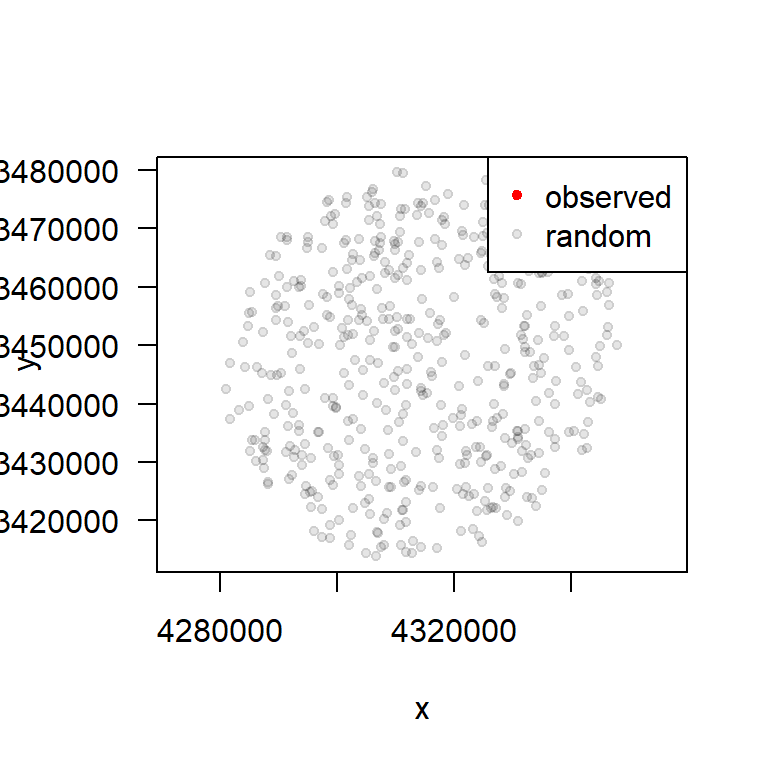
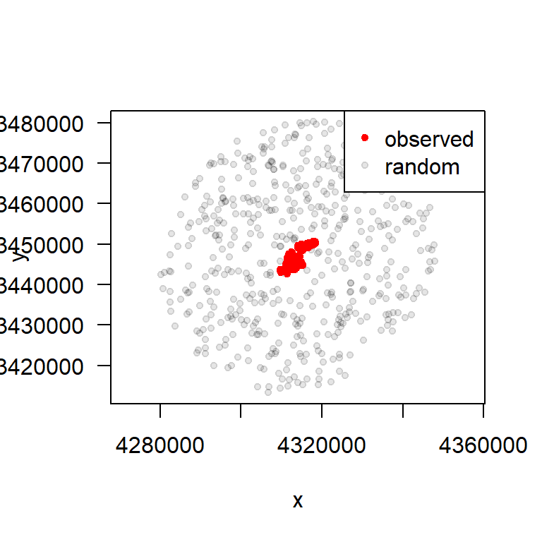

# A tibble: 826 × 4
x_ y_ t_ burst_
* <dbl> <dbl> <dttm> <dbl>
1 4314068. 3445807. 2008-03-30 00:01:47 1
2 4314053. 3445768. 2008-03-30 06:00:54 1
3 4314105. 3445859. 2008-03-30 12:01:47 1
4 4314044. 3445785. 2008-03-30 18:01:24 1
5 4313015. 3445858. 2008-03-31 00:01:23 1
6 4312860. 3445857. 2008-03-31 06:01:45 1
7 4312854. 3445856. 2008-03-31 12:01:11 1
8 4312858. 3445858. 2008-03-31 18:01:55 1
9 4312745. 3445862. 2008-04-01 00:01:24 1
10 4312651. 3446024. 2008-04-01 06:00:54 1
# ℹ 816 more rowsResource Selection Functions (RSF) with amt
About
This vignette briefly introduces how one can fit a Resource-Selection Function (RSF) with the amt package. We will be using the example data of one red deer from northern Germany and one covariate: a forest cover map.
Getting the data ready
First we load the required libraries and the relocation data (called deer)
Next, we have to get the environmental covariates. A forest layer is included in the package. Note, that this a regular SpatRast.
forest.cover = readRDS("sp.layer.forest")
plot(forest.cover,main="Forest Cover")
points(deer$x_,deer$y_,col=0)Load additinal layer
Prepare Data for RSF
Random Points
Before fitting a RSF we have to do some data preparation. We have to generate random points, points that we think the animal could have used. The random points define the availability domain. In amt the function random_points is designed to do just that. The function can be used in 3 different ways, depending to the type of object that is passed to the function call.
- A
track_*(such as thedeerobject) can be passed to the functionrandom_points. The function then calculates a home range (the home-range estimator can be controlled with argumenthr). Within this home rangenrandom points are generated. The default value ofnis ten times the number of present points. - If a
hr-object (i.e., the result of a home-range estimation inamt) is passed torandom_points, points are generated within the home range. This allows to generate random points within any home range that was previously estimated inamt. Note, that this could be a home range of multiple animals. In this case, the functionrandom_pointshas one additional argument calledpresence. This argument takes atrk_*with the presence points and adds these points for convenience to the random points. - A
SpatialPolygons*-object orsf-object. The latter must containPOLYGONs orMULTIPOLYGONs as features. This can be useful in situation where a home range needs to be buffered, or when other geographical features are considered as the availability domain. As before, this method forrandom_pointsalso takes the argumentpresenceto optionally add the observed points to the output.
Lets now illustrate the three different situations. First we take random points from a track_xy
r1 <- random_points(deer)
plot(r1)With the argument n we can control the number of random points (remember that the default is ten times as many points as we observed points).
r1 <- random_points(deer, n = 100)
plot(r1)Here, we can also add the observed points:
hr <- hr_mcp(deer)
r1 <- random_points(hr, n = 500, presence = deer)
plot(r1)
Finally, we can work with the home range and for example a buffer and then generate random points within the this new polygon.
hr <- hr_mcp(deer) |> hr_isopleths() |>
sf::st_buffer(dist =3e4) # add a 30km buffer
r1 <- random_points(hr, n = 500)
plot(r1)
And we can also add the observed points.
hr <- hr_mcp(deer) |> hr_isopleths() |>
sf::st_buffer(dist =3e4) # add a 30km buffer
r1 <- random_points(hr, n = 500, presence = deer)
plot(r1)
Of course we are not restricted to the sf::st_buffer function. All geometric operations from the sf package can be used to generate arbitrarily complex availability domains.
Extract covariates
As the next step we have to extract the covariates at point. We can do this with extract_covariates.
set.seed(5454)
rsf1 <- deer |> random_points(n=20000, presence = deer) |>
extract_covariates(forest.cover) |>
extract_covariates(shrub.cover)
table(rsf1$case_)
FALSE TRUE
20000 826 Fitting RSF
Now all pieces are there to fit a RSF. We will use fit_rsf, which is just a wrapper around stats::glm with family = binomial(link = "logit").
Call:
stats::glm(formula = formula, family = stats::binomial(link = "logit"),
data = data)
Coefficients:
Estimate Std. Error z value Pr(>|z|)
(Intercept) -3.14260 0.05440 -57.770 < 2e-16 ***
forest 0.15508 0.12828 1.209 0.226676
shrub.cover -0.15246 0.04483 -3.401 0.000671 ***
---
Signif. codes: 0 '***' 0.001 '**' 0.01 '*' 0.05 '.' 0.1 ' ' 1
(Dispersion parameter for binomial family taken to be 1)
Null deviance: 6950.4 on 20825 degrees of freedom
Residual deviance: 6931.6 on 20823 degrees of freedom
AIC: 6937.6
Number of Fisher Scoring iterations: 6Additional (BDG)
Fit the same model with the glm function directly
Call:
glm(formula = case_ ~ forest + shrub.cover, family = binomial(link = "logit"),
data = rsf1)
Coefficients:
Estimate Std. Error z value Pr(>|z|)
(Intercept) -3.14260 0.05440 -57.770 < 2e-16 ***
forest 0.15508 0.12828 1.209 0.226676
shrub.cover -0.15246 0.04483 -3.401 0.000671 ***
---
Signif. codes: 0 '***' 0.001 '**' 0.01 '*' 0.05 '.' 0.1 ' ' 1
(Dispersion parameter for binomial family taken to be 1)
Null deviance: 6950.4 on 20825 degrees of freedom
Residual deviance: 6931.6 on 20823 degrees of freedom
AIC: 6937.6
Number of Fisher Scoring iterations: 6Let’s next interpret the coefficients. For a full understading, please see
Fieberg, J., Signer, J., Smith, B., & Avgar, T. (2021). A ’How to’guide for interpreting parameters in habitat‐selection analyses. Journal of Animal Ecology, 90(5), 1027-1043.
We are modeling the relative intensity of selection. Since we are defining the zeros here, it turns out that the intercept has no meaningful interpretation. The intercept is related to the ratio of used to available locations and that’s all. We can interpret the slope coefficients! Here, a coefficient at or really close to zero (no statistically clarity) indicate that the variable is being selected for in proportion to available.
Looking at our results, we can see that the coefficient for percent forest is positive, thus as percent forest cover increases, the relative intensity of selection increases. In other words, in relative terms, more cover is selected for more than less cover. The opposite is true for the effects of shrub cover, which the coefficient is negative. Remember, this covariate is standardized. As shrub cover increases from the mean, we expect that deer will increasing select for these areas less than available. Also, as shrub cover decreases from the mean, we expect increasing selection to what is available by the deer.
Plot Predicted Relative Selection
# Decide on covariate values to predict to. Here we will create a plot of how relative intensity of selection
# varies by forest cover at the mean value of shrub cover.
newdata = data.frame(shrub.cover=0,forest=seq(0,1,by=0.01))
#Predict to the link scale- do not predict to probability scale, as
#we are actually fitting an exponential linked model
rsf2$coefficients[1] = 0
coef(rsf2)(Intercept) forest shrub.cover
0.0000000 0.1550837 -0.1524609 preds.link = predict(rsf2,newdata=newdata,
type="link")
relative.prob = exp(preds.link)
plot(newdata$forest,relative.prob,type="l",lwd=3,xlab="Forest Cover",ylab="Relative Intensity of Selection")A common output of interest is the relative selection strength (RSS) between two areas or values of covariate. See,
Avgar T, Lele SR, Keim JL, Boyce MS. Relative Selection Strength: Quantifying effect size in habitat- and step-selection inference. Ecol Evol. 2017; 7: 5322–5330. https://doi.org/10.1002/ece3.3122
# Let's compare the RSS between a location with complete forest cover (1) and no forest cover (0) at the mean value of shrub cover (0).
#See formula in Avgar et al. 2017, section 2.1
exp(coef(rsf2)[2] * (1-0) + coef(rsf2)[3]*0) forest
1.167756 This value indicates that there is a 1.16 increase in relative selection at complete forest cover versus no cover. Not a large difference in relative selection! Also, looking at the statistical clarity, there is not clear evidence that forest is selected for or against more than available.
Next, lets conisder shrub cover relative selection and relative selection strength.
# Here we will create a plot of how relative intensity of selection
# varies by shrub cover at the mean value of forest cover.
newdata = data.frame(shrub.cover=seq(-3,3,by=0.1),forest=mean(values(forest.cover)))
#Predict to the link scale- do not predict to probability scale, as
#we are actually fitting an exponential linked model
rsf2$coefficients[1] = 0
coef(rsf2)(Intercept) forest shrub.cover
0.0000000 0.1550837 -0.1524609 preds.link = predict(rsf2,newdata=newdata,
type="link")
relative.prob = exp(preds.link)
plot(newdata$shrub.cover,relative.prob,type="l",lwd=3,xlab="Forest Cover",ylab="Relative Intensity of Selection")
abline(h=1,lwd=2,lty=3,col=2)
text(2.5, 1.1,"Selection")
text(2.5, 0.9,"Avoidance")# Let's compare the RSS between a location with very low shrub cover (-3) and very high shrub cover (3) at the mean value of forest cover (0).
#See formula in Avgar et al. 2017, section 2.1
exp(coef(rsf2)[2] * mean(values(forest.cover)) + coef(rsf2)[3]*(-3 - 3)) forest
2.526219 An area with very low shrub cover is much more likely to be selected than high shrub cover with a RSS of 2.5.
# Decide on covariate values to predict to. Here we will use all values from both
# covariates, so we can predict relative intesnsity of selection to the whole landscape
newdata = data.frame(shrub.cover=values(shrub.cover),forest=values(forest.cover))
#Predict to the link scale- do not predict to probability scale, as
#we are actually fitting an exponential linked model
rsf2$coefficients[1] = 0
coef(rsf2)(Intercept) forest shrub.cover
0.0000000 0.1550837 -0.1524609 preds.link = predict(rsf2,newdata=newdata,
type="link")
relative.prob = exp(preds.link)
# Create new spatial layer and then
# plug in the predictions
preds.map = forest.cover
values(preds.map) = relative.prob
plot(preds.map,main="Relative Probability of Selection")Values below 1 indicate avoidance (use less than available) and values greater than 1 indicate selection (use greater than selection). These values are called the relative intenity of selection or relative probability of selection.
This model fitting process is sensitive to the number available locations (0’s or ‘FALSE’)
# Draw random available samples (0's) in equal proportion to the number of deer locations
set.seed(5454)
rsf.data1 <- random_points(deer, n = nrow(deer), presence = deer) |>
extract_covariates(forest.cover)|>
extract_covariates(shrub.cover)
head(rsf.data1)# A tibble: 6 × 5
case_ x_ y_ forest shrub.cover
* <lgl> <dbl> <dbl> <dbl> <dbl>
1 FALSE 4310495. 3444563. 0.0156 -0.969
2 FALSE 4314429. 3447738. 0 1.31
3 FALSE 4312423. 3447310. 0 0.794
4 FALSE 4318130. 3450293. 0.0278 0.963
5 FALSE 4311328. 3443957. 0.732 0.0435
6 FALSE 4312433. 3446426. 0.403 0.656 table(rsf.data1$case_)
FALSE TRUE
826 826 rsf.fit1 = glm(case_~forest+shrub.cover, data=rsf.data1,family=binomial(link="logit"))
summary(rsf.fit1)
Call:
glm(formula = case_ ~ forest + shrub.cover, family = binomial(link = "logit"),
data = rsf.data1)
Coefficients:
Estimate Std. Error z value Pr(>|z|)
(Intercept) 0.04698 0.07606 0.618 0.53682
forest 0.19889 0.17533 1.134 0.25664
shrub.cover -0.17372 0.06437 -2.699 0.00696 **
---
Signif. codes: 0 '***' 0.001 '**' 0.01 '*' 0.05 '.' 0.1 ' ' 1
(Dispersion parameter for binomial family taken to be 1)
Null deviance: 2290.2 on 1651 degrees of freedom
Residual deviance: 2277.7 on 1649 degrees of freedom
AIC: 2283.7
Number of Fisher Scoring iterations: 3Note that these estimated slope coefficients are not the same as when fitting the same model using the data from rsf1 where there are 20,000 available samples. The intercept is very noticeably has the biggest difference, which is something we expect. The intercept is not meaningfully interpretable in this type of model. It essentially represents the ratio of used to available samples. As we increase the available sample, the intercept will get smaller. What we should be concerned about are the slope coefficient estimates. As we increase the available sample, we should see these estimates stabilize, as with their p-values.
Assignment
Conduct a sensitivity analysis to investigate how many available samples are needed for the slope coeficient estimates to stabilize. Essentially, you want to increase the available sample until the estimated slopes no longer change. Fit the same model (case_ ~ forest + cover) to each of these datasets. Extract the slope coeficients for the variables ‘forest’ and ‘shurb.cover’. Create a table of coeficient estimates along with the available sample size used. Determine generally when the coefficient estimates stabilize. A common recommendation in the literature is to used a 1:1 ratio between used locations and available samples. If you had only fit the model with this size of available, how would your estimates compare to the estimates you get when using a very large available sample?
Note
How you setup this sensitivity analysis will affect your ability to get estimates to converge. For example, if you take separate random samples, it might take a very large number to get the estimates to converge. This is because there is not consistency between random draws. This stochasticity adds some additional variation when estimating. Ideally, we would create systematic samples at smaller and smaller cell sizes